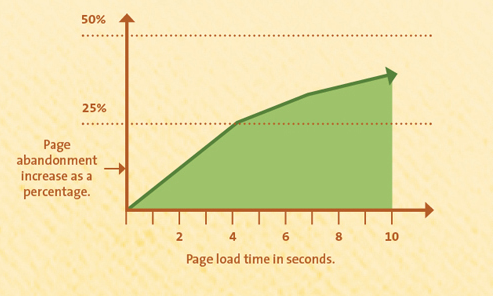
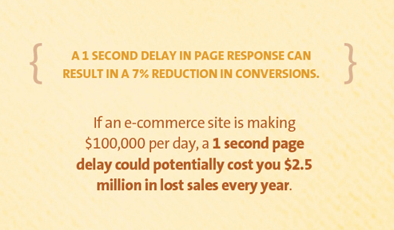
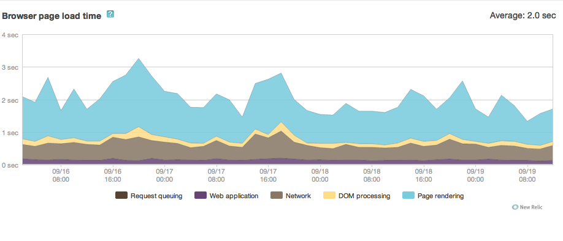
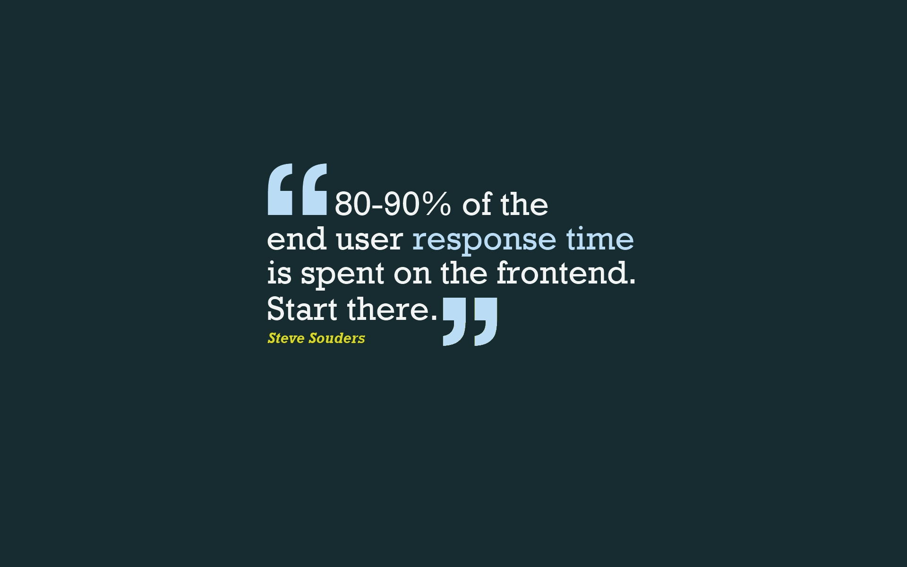
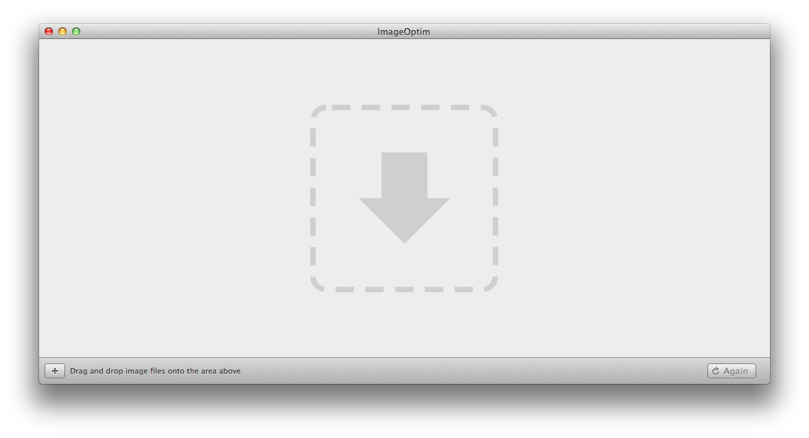
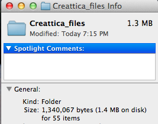
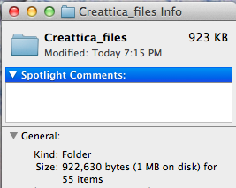

Slow websites suck
I don't like using or making them
and they sell less things


2 second page loads are doableSub 1 second would be awesome


Rails gives you for free: Concat + Minify JS and CSS
Gzip everything
Add expires headers
load JS with headJS Can embed within markup to avoid external script call ( ~> 2.5KB)
compress images with imageOptimUses multiple tools



417KB SavedThat could be seconds to end user load times (not milliseconds)
Rails HTTP StreamingStreaming is a bad nameIt's actually Chunked transfer encoding
def show
render :stream => true
end
# or
def show
respond_with @pjamas, :stream => true
end
Be wary of:
Middlewares that modify responsesNewrelic is an obvious one
# config/newrelic.yml
browser_monitoring:
auto_instrument: false
# layouts/application.html.erb
<head>
<%= NewRelic::Agent.browser_timing_header %>
<!-- rest of layout -->
<%= NewRelic::Agent.browser_timing_footer %>
</body>
HAML (it does not chunk)ERB and Slim work fine
content_forUse provide instead
Almost the same except can only be called once
Nginx proxyCan work on forking servers (unicorn) but cause issues with slow clients
Works better with threaded servers (puma)
PJAX is neat
But tricky to measureperformance.timing isn't available
document.onload() can't be used
# layouts/pjax.html.erb
<%= NewRelic::Agent.pjax_timing_start %>
<!-- rest of layout -->
<%= NewRelic::Agent.pjax_timing_end %>
<!-- HTML output -->
<script type="text/javascript">
pjaxTiming['firstByte'] = new Date().getTime();
</script>
<!-- rest of layout -->
<script type="text/javascript">
pjaxTiming['transactionName'] = 'Controller/public/welcome';
pjaxTiming['queueTime'] = 0;
pjaxTiming['appTime'] = 311;
pjaxTiming['lastByte'] = new Date().getTime();
</script>
#= require jquery
#= require jquery.pjax
$(document).on 'pjax:start' ->
window.pjaxTiming = { 'navigationStart': new Date().getTime() }
#= require jquery.waitforimages
$(document).on 'pjax:end' ->
$('#main-inner').waitForImages ->
if NREUMQ?
currentTime = new Date().getTime()
totalBeTime = pjaxTiming['firstByte'] - pjaxTiming['navigationStart']
domTime = pjaxTiming['lastByte'] - pjaxTiming['firstByte']
feTime = currentTime - pjaxTiming['firstByte']
NREUM.inlineHit(pjaxTiming['transactionName'], pjaxTiming['queueTime'], pjaxTiming['appTime'], totalBeTime, domTime, feTime)